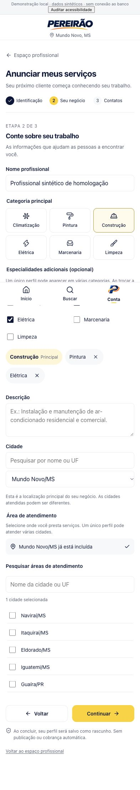
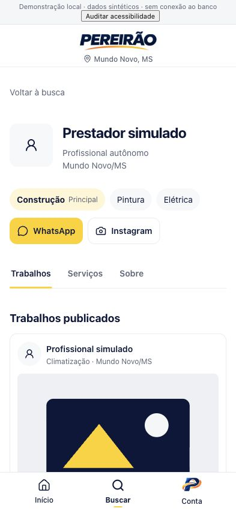
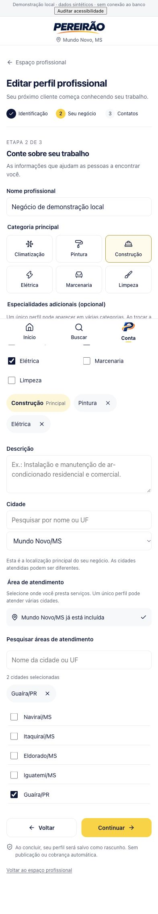
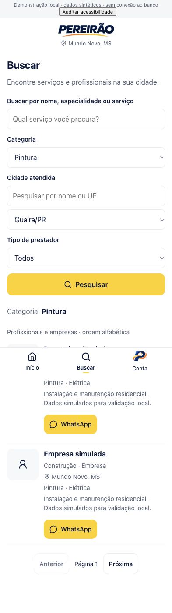
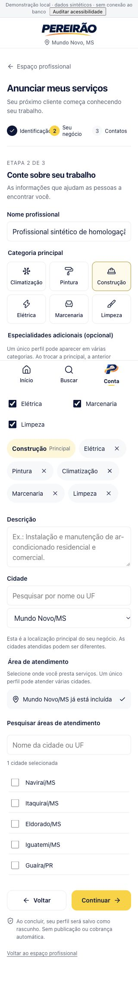
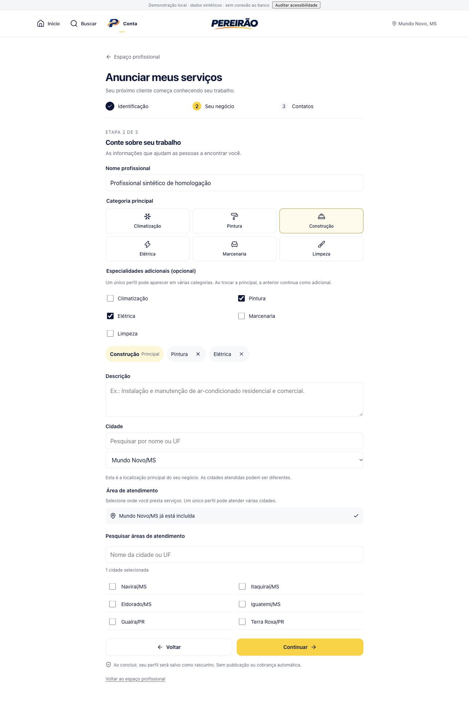

Base: cd0410c0834567e63a183465d564e8f46bb18790. Branch feat/multiplas-especialidades.
Migração proposta, ainda não aplicada ao Supabase. Sem merge, publicação de perfis, início de gratuidade ou operações financeiras. Pix permanece desativado.
A principal continua em businesses.category_id. A nova relação business_categories armazena somente adicionais, com chave composta, FKs e índice inverso. O cadastro mantém três etapas; a edição carrega e remove adicionais. A busca usa principal OU adicional, com cidade atendida, tipo, termo e paginação de 20 resultados no servidor, sem duplicação. O perfil destaca a principal e mantém adicionais visíveis.
Serviços preservam sua classificação própria. Remover uma especialidade não exclui nem reclassifica serviços, fotografias ou publicações. Ao promover uma adicional a principal, a anterior permanece adicional quando ativa.
Leitura pública somente de adicionais ativos de negócios publicados. Membros conseguem consultar seus registros; escrita direta na relação não é concedida ao cliente. A RPC verifica usuário autenticado, vínculo owner/admin e restrições existentes, com search_path fixo. Categorias inativas, vínculos repetidos e repetição da principal são recusados.
A classificação é atualizada atomicamente, com locks de negócio, vínculo e categorias, comparação da versão carregada e erro 40001 em conflito. Repetição idêntica é idempotente. O restante do salvamento do perfil continua em fases, como antes; uma falha posterior não torna todos os campos atômicos e exige nova tentativa.
A proteção de publicação, os 90 dias, Auth, PWA e Asaas não foram alterados. Nenhuma nova credencial é necessária.
| Verificação | Resultado | Natureza |
|---|---|---|
| Typecheck, build e histórico local | Aprovados | Execução local |
| Testes automatizados | 422 testes, 37 arquivos | Repositórios/APIs simulados |
| SQL/RLS | 385 verificações | PostgreSQL 17 descartável nativo, sem Docker |
| Concorrência | Duas sessões SQL reais, conflito e repetição idempotente | Banco local descartável |
| Preservação sequencial | Dados, IDs, timestamps e políticas anteriores preservados | Fixtures antes/depois da migração local |
| API pública Supabase | Somente GET; compatibilidade anterior 200, catálogo 7 cidades/6 categorias | Projeto remoto real, sem sessão |
| Responsividade | 27 cenários; centro geométrico do cabeçalho com desvio 0 px; sem overflow | Chromium emulado com dados locais sintéticos |
| Dispositivos físicos | Pendente | Não executado em Android/iPhone físico ou Safari |
| Escrita autenticada das novas especialidades no Supabase | Pendente de migração autorizada | Não apresentada como homologação operacional |
Larguras: 320, 375, 390, 393, 430, 768, 1024, 1280 e 1440 px; cenário 393 × 852 incluído. Cadastro, busca e perfil examinados. Seleção das seis categorias também verificada em 320 px. Navegação preservada em Início, Buscar e Conta. Análise automática de acessibilidade da edição sem violações reportadas; não substitui teste assistivo humano.
Snapshots de leitura antes/depois idênticos: 11 migrações, três negócios, três áreas de atendimento, uma fotografia de portfólio, zero serviços e zero publicações; seis categorias ativas. Não foram consultados dados privados de empresas. Políticas anteriores verificadas sem alterações. Security Advisor: 19 avisos INFO de RLS sem política em tabelas privadas e um WARN de proteção contra senhas vazadas, já existentes; nenhum ERROR.
A nova tabela/RPC ainda não existem remotamente. A aplicação detecta isso e mantém o cadastro pela principal e a busca anterior. Não oculta erros de autorização, rede ou validação como se fossem ausência da migração. Após futura ativação é necessário recarregar o aplicativo para descobrir a nova capacidade.
20261121193603_business_specialties.sql
SHA-256: cc883caf4ce8064a3e3752e2d77bf8f827de84524a09ae767a206fe4a3bb346a.
Não faz backfill nem modifica dados anteriores. Preserva rascunhos legados com principal nula e categorias antigas inativas quando não alteradas. Após aplicação futura, o histórico passará de 11 para 12 migrações.
Fixtures locais identificadas como sintéticas; não representam prestadores reais.






Resumo · Medições · GETs reais
GitHub Actions e Preview: acompanhamento no próprio PR.